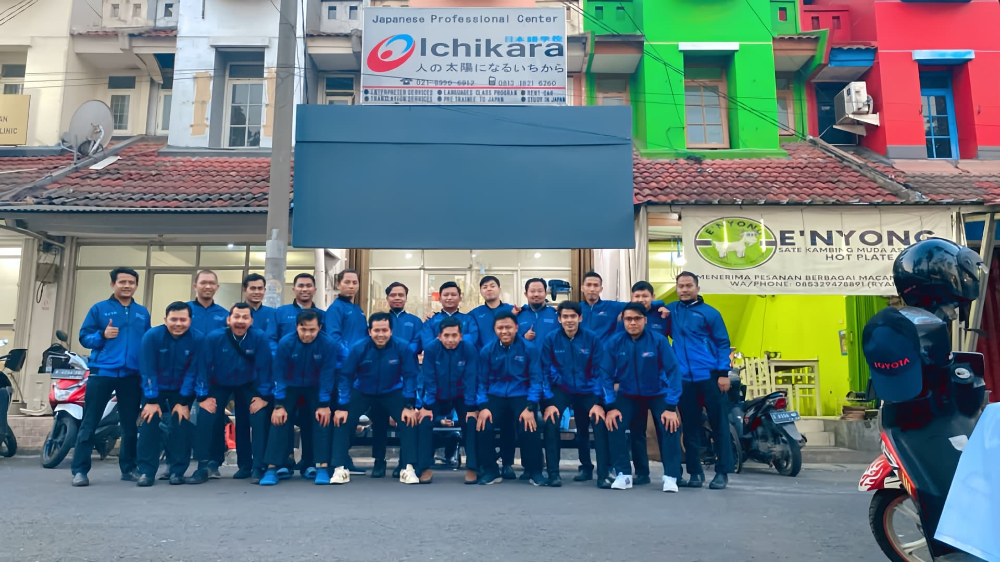
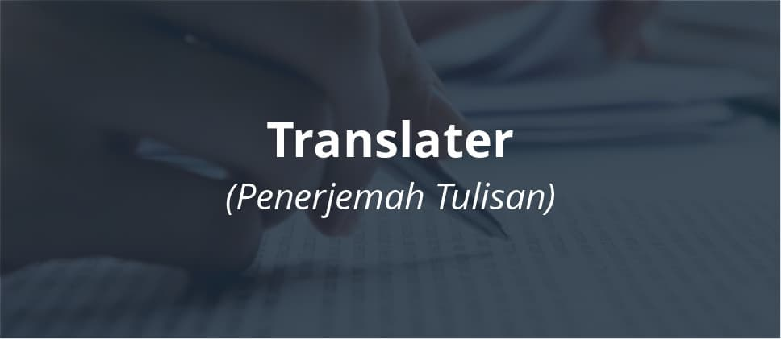
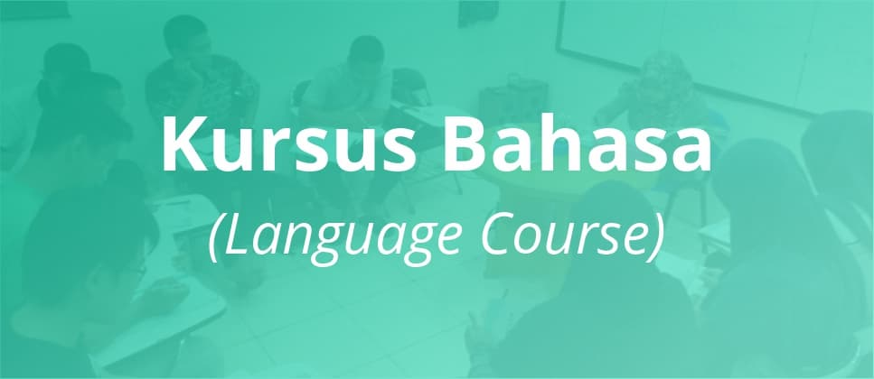

日本語サービス · Indonesia
PT. Ichikara
Solusi terpercaya untuk layanan penerjemahan, interpretasi, dan edukasi bahasa Jepang. Menjembatani peluang profesional antara Indonesia dan Jepang dengan presisi linguistik.
Klien yang Mempercayai Kami
Layanan Kami
Layanan Unggulan Kami
Pilih layanan yang sesuai dengan kebutuhan profesional atau akademik Anda. Kami menjamin akurasi dan kualitas standar industri Jepang.

Jasa Penerjemahan
Dokumen bisnis, kontrak hukum, hingga manual teknis. Diterjemahkan dengan akurasi tinggi oleh penerjemah tersumpah berpengalaman di industri Jepang dan Indonesia.
Lihat Selengkapnya
Jasa Interpreter
Komunikasi bisnis tanpa hambatan bahasa. Interpreter kami hadir di meeting room, lantai produksi, hingga ruang negosiasi Anda.
Lihat Selengkapnya
Kursus Bahasa Jepang
Belajar bahasa Jepang dengan metode terstruktur, dari N5 hingga N1, untuk individu maupun perusahaan.
Lihat SelengkapnyaTokutei Ginou / SSW
Wujudkan impian bekerja di Jepang bersama Ichikara, dari persiapan bahasa hingga penempatan kerja.
Lihat Selengkapnya最新の成功事例
Kisah Sukses Terbaru
Inspirasi dari perjalanan mitra kami dalam meraih kesuksesan bersama PT. Ichikara.


Siap Bermitra dengan Ichikara?
Konsultasikan kebutuhan bahasa Jepang Anda dengan tim ahli kami. Kami siap memberikan solusi yang akurat dan efisien.